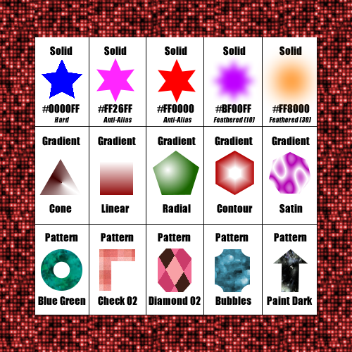
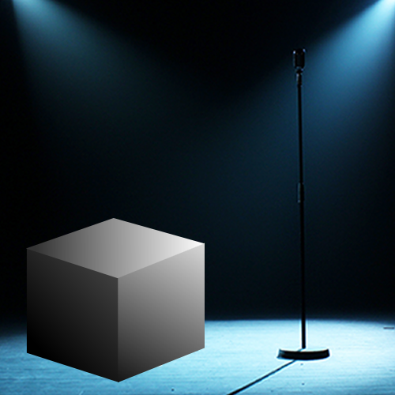
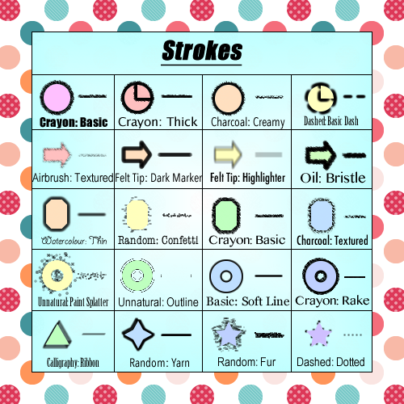
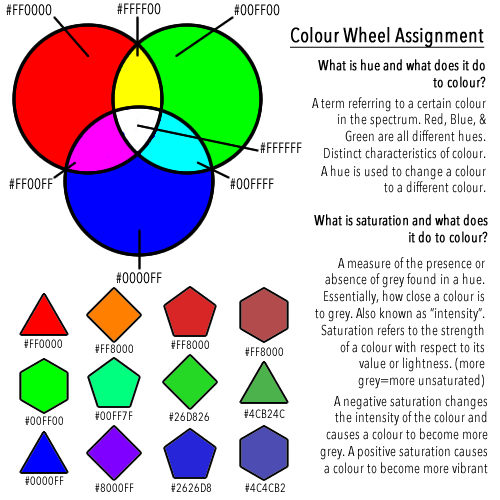

| |
FILLS
What?
Become familiar with types of fills by creating a grid with sample outputs of Solid, Pattern and Gradient fills. Create a 3D cube using vector tools (with a light source striking the 3 visible sides from the upper right) and last but not least, create a Fireworks Document containing 20 different Strokes.
Software:
Skills:
- Understanding: Understand the different types of fills and how to use specific types of fills.
- Organization: Grouping information together and placing it so it is easily readable/understandable.
Thoughts?
A useful assignment for later projects. I found that this assignment was quite simple and easy to complete.


 |
|
COLOR CYCLE
What?
Use the Adobe Fireworks to create a png file and use the vector tools to create circles and squares. Create a colour wheel and label each color in the circles with the appropriate hexidecimal number. Next, change the saturation and hue of the colours in the boxes and then, label the new color with the new hexidecimal number.
Software:
Skills:
- Colours and colour terms: Become familiar with colours and with terms associated with colour such as hue and saturation.
- Hexidecimal Number: Get more practice with hexidecimal codes.
Thoughts?
This assignment allowed me to understand the terms hue and saturation. I enjoyed planning the layout of what goes where. I find that this is a simple assignment to complete but allows me to gain an extensive amount of knowledge.
 |
|